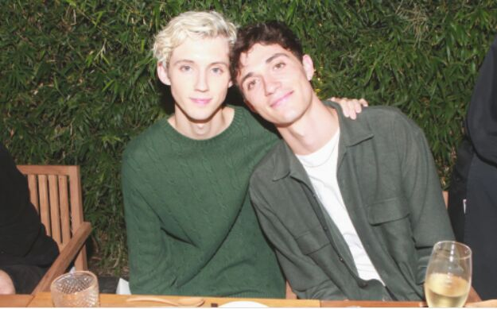

特洛耶·希文（Troye Sivan），1995年6月5日出生于南非约翰内斯堡，南非裔澳大利亚歌手、演员。 2007年，在YouTube平台翻唱歌曲《Tell Me Why》，获得大众的关注 [1] 。2008年，在电影《X战警前传：金刚狼》中出演少年时期的“金刚狼”詹姆斯·豪利特。2011年，凭借电影《马铃薯》提名南非电影电视奖电影长片类最佳男主角奖 [2] 。2013年，发行个人首张音乐EP《TRXYE》。2014年，入选《时代周刊》“2014年网络最具有影响力青少年25位” [3] 。2015年，获得儿童选择奖“最受欢迎澳大利亚/新西兰网络红人奖” [4] ，并发行个人第二张音乐EP《WILD》，12月发行个人首张音乐专辑《Blue Neighbourhood》 [5] 。2018年，发行个人第二张音乐专辑《Bloom》 [6] 。
特洛耶·希文出生于南非约翰内斯堡。在他两岁时，全家移居至澳大利亚西部珀斯。特洛耶·希文的爸爸是房地产经纪人，出生于一个犹太家庭 [7] 。妈妈是全职家庭主妇，皈依犹太教 [8] 。特洛耶·希文是作为传统的犹太人长大，曾就读于一所犹太学校 [8] 。特洛耶·希文有庆祝犹太安息日 [9] 。2007年，特洛耶·希文开启YouTube自媒体频道，并上传了翻唱《Tell Me Why》的视频，获得大众的关注，一个月时间获得了2.7万订阅数 [10] 。
2007年，特洛耶·希文在里格尔剧院（Regal Theatre）上演的舞台剧《雾都孤儿》里扮演主角Oliver Twist，同年，他参加了澳大利亚的真人秀节目《Star Search》。2008年，参与电影《X战警前传：金刚狼》的拍摄，出演少年时期的詹姆斯·豪利特 [11] 。2009年，发行单曲《For Them》，该曲是一首为世界苦难儿童所唱的歌。同年，翻唱歌曲《an angel》。2010年2月，参与《We Are The World 25 for Haiti》的录制，为海地地震遇难者筹集善款。3月，在南非参与电影《马铃薯》（Spud）的拍摄，在该片中出演男主角 [12] 。
2011年，凭借电影《马铃薯》提名南非电影电视奖“电影长片类最佳男主角奖” [2] 。2012年3月9日，特洛耶·希文参与录制的《天天向上》播出，特洛耶·希文在节目中翻唱了《The One That Got Away》 [13] 。2013年6月5日，签约澳大利亚百代唱片。2014年8月15日，发行个人首张音乐EP《TRXYE》。该EP上架首周，在全球范围内获得55国下载榜冠军；EP单曲《Happy Little Pill》被澳洲认证黄金销量。同年10月，入选《时代》周刊“2014年网络最具有影响力青少年25位”。 [3]
2015年9月4日，发行个人第二张音乐EP《WILD》。10月15日，北美巡演于西雅图启程。12月4日，发行个人首张音乐专辑《Blue Neighbourhood》 [14] 。2016年4月，登上同性杂志《Out》封面。5月，亮相美国公告牌颁奖典礼，并在现场演唱《Youth》 [15] 。2017年5月26日，发行音乐单曲《There For You》 [16] 。8月31日，加盟澳洲男星乔尔·埃哲顿执导的同性题材影片《被抹去的男孩》 [17] 。2018年8月，发行个人第二张音乐专辑《BLOOM》 [6] 。
2013年8月7日，特洛耶·希文在YouTube发布视频，公开自己的性取向 [1] 。同时，他得到了父母和亲戚的理解和支持 [3] 。他的同性男友是Jacob Bixenman [18] 。
《Harper's BAZAAR》
2019年11月
封面人物
《Rogue》
2018年冬季
封面人物
《Paper》
2018-09
封面人物
《VMAN》
2018年8月
封面人物
《Time Off》
2018年8月
封面人物
《Attitude》
2018年7月刊
封面人物
《OUT》
2018-07
封面人物
《Clash》
2018-06
封面人物